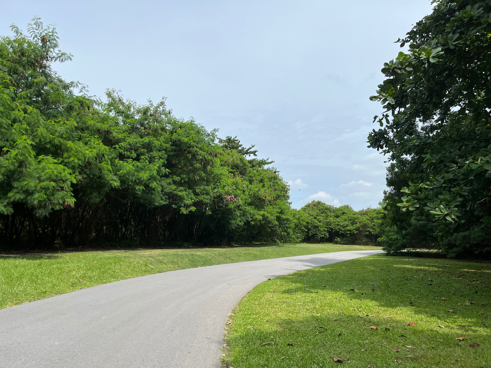

A guide to St. John's, Lazarus and Kusu Islands
(and how to get there)
Saint John's Island is the largest of the Southern Islands in Singapore. The island formerly housed a quarantine station for cholera cases detected among immigrants in the late 19th century, and starting from 1901, victims of beriberi(vitamin B1 dediciency) were also brought to the island.
Nature lovers can venture the island on the St. John's Island Trail, which was developed to encourage appreciation for the rich biodiversity and history of the island.
Free guided tours are also available to those that prefer this and I would recommend this option to first-timers on the island.
Click here to find out more about the trail and tour!
Connected to St. John's island by a mini "causeway", Lazarus Island offers convenient accessibility to lush scenery and a prestine lagoon with an unobstructed sea view.
The big size of the lagoon offers visitors a enjoyable beach experience.
Families can have a nice picnic by the beach and not to worry, there is plenty of open space for the kids to run around and play!
For couples, this lagoon is a romantic getaway to spend some quality alone time and to enjoy each other's company while basking in rays of the evening sunset.
Kusu Island is the smallest island among the three islands in this guide. "Kusu" is Hokkien for "Tortoise". The legend behind the island says that a magical tortoise turned itself into an island to save two shipwrecked sailors, one a Malay and the other a Chinese. Thus, it's not suprising that this island is home to many tortoises!
Also located on Kusu island is the popular Chinese temple dedicated to both Da Bo Gong(Tua Pek Kong), and Na Tuk Kong. The temple was built in 1923 by a wealthy businessman and houses two main Taoist deities, Da Bo Gong and Guan Yin (Goddess of Mercy). The former is highly regarded as having the power to confer prosperity, cure diseases, calm the sea and avert danger, while Guan Yin is known as the "Giver of Sons".
There are a few ferry companies that offer their transport services to and fro the islands but I find the most affordable one to be Singapore Island Cruise (SIC).